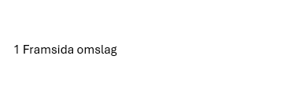
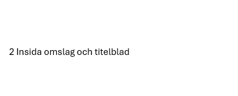

Digitaliserad version av Fosterländsk sång vid Göta kanals öppnande 1832
text

Om projektet:
Fosterländsk sång vid Götha Canals Öpnande i hans Maj:t Konungens och den Kongl. Famillens
Närvaro, den 26 september 1832.
Magnus Martin af Pontin
P. A. Norstedt & söner
1832
Stockholm
Vallabiblioteket, Linköpings universitetsbibliotek
Bokladan
Har varit i Kungliga vattenfallsstyrelsens ägo, enligt etikett.
Har varit i ytterligare en persons ägo, indikerat av etikett där det står Ex Libris
och initialer.
Author:
Transcription by:
Marie Gyll
Jessica Hultengren
Susanne Landén
Magdalena af Trolle